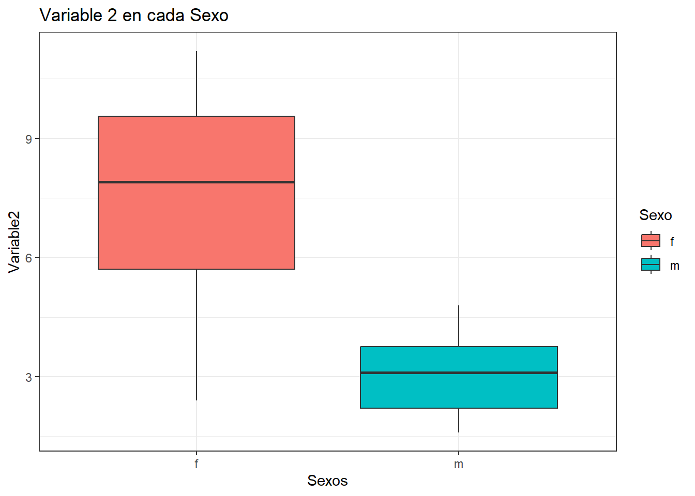
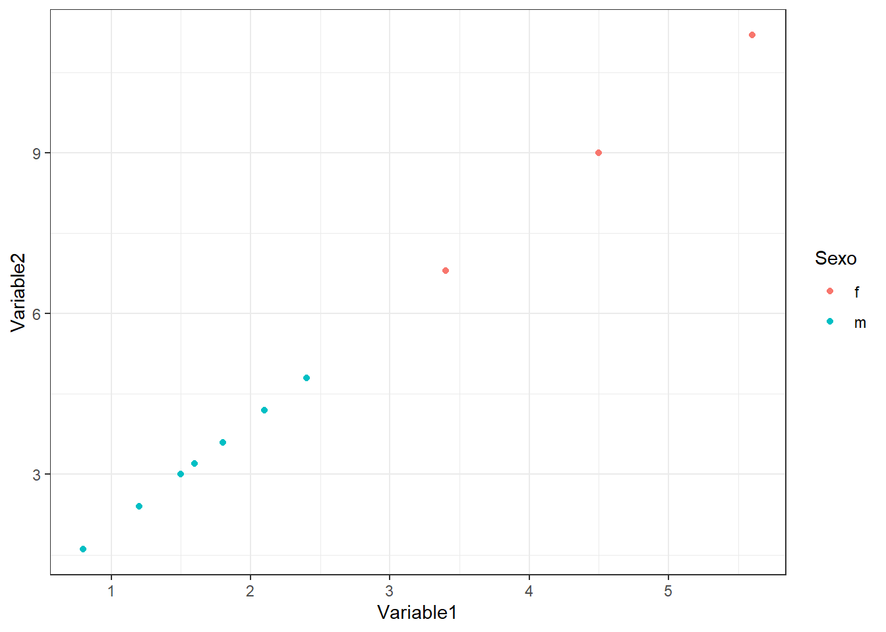
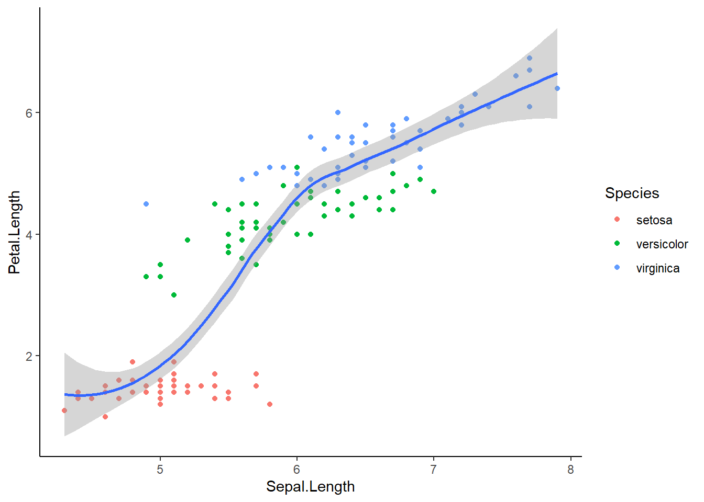
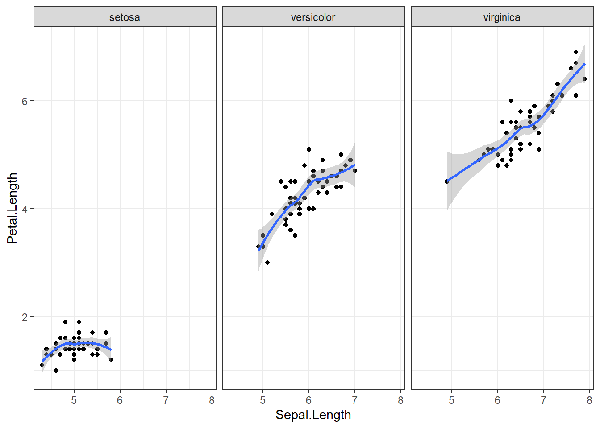

A = c(1,2,3,4,5)
A[1] 1 2 3 4 5B = seq(1,5,by=1)
B[1] 1 2 3 4 5C = c(2,4,6,8,10)
C[1] 2 4 6 8 10D = seq(2,10,by=2)
D[1] 2 4 6 8 10

El presente taller tiene como objetivo, realizar un entrenamiento básico, sobre los aspectos más relevantes en el manejo del programa RStudio, el cual se encuentra alojado en el siguiente 📈enlace.

Se utilizará como referente al capitulo 2 del libro Análisis de datos ecológicos y ambientales (Rodríguez-Barrios, J. 2023), alojado en el siguiente enlace 📖Enlace_Libro


Descargar el script de RMarkDown (rmd) titulado “Taller2.1.Rmd” en el siguiente enlace 📈Taller2.1.Rmd.
Crear una carpeta en su computador titulada “Taller2.1_IntroRStudio” y guardar el archivo descargado junto con el resto de materiales que se describen a continuación.
Abrir el archivo “Taller2.1.Rmd” y abrir el siguiente enlace, correspondiente al ejercicio a realizar 📈Taller1.IntroRStudio.
Revisar los siguientes enlaces complementarios:
Algunas operaciones complementarias que permitirán realizar la siguiente actividad:
Vectores y secuencias
A = c(1,2,3,4,5)
A[1] 1 2 3 4 5B = seq(1,5,by=1)
B[1] 1 2 3 4 5C = c(2,4,6,8,10)
C[1] 2 4 6 8 10D = seq(2,10,by=2)
D[1] 2 4 6 8 10Otros vectores y secuencias
# Vectores
sitios <- c(2, 3, 2, 3, 2, 3) # Vector sitios
sitios [1] 2 3 2 3 2 3sitios1 <- rep(seq(2,3),3) # Operación con repeticiones (rep)
sitios1[1] 2 3 2 3 2 3sitio2 <- c(2,2,2,3,3,3,4,4,4) # Elementos de forma manual
sitio2[1] 2 2 2 3 3 3 4 4 4sitios3 <- rep(seq(2,4,1),each=3) # Operación con repeticiones (rep)
sitios3[1] 2 2 2 3 3 3 4 4 4# Imprimir el vector
sitios <- sitio2 [1:3] # Tres primeros elementos del vector sitios
sitios # Imprimir el vector[1] 2 2 2sitios <- c("dos", "tres", "dos", "dos") # Vector como caracter
sitios[1] "dos" "tres" "dos" "dos" sitios <- c("a", "b", "c", "d") # Vector como caracter
sitios[1] "a" "b" "c" "d"sitios1 <- letters[1:4] # vector con las primeras cuatro letras
sitios1[1] "a" "b" "c" "d"sitios2 <- LETTERS[1:4] # vector con las primeras cuatro letras
sitios2[1] "A" "B" "C" "D"sitios3 <- c("A","A","A","B","B","B","C","C","C",
"D","D","D") # vector con las primeras cuatro letras
sitios3 [1] "A" "A" "A" "B" "B" "B" "C" "C" "C" "D" "D" "D"sitios4 <- rep(LETTERS[1:4],each=3) # vector con las primeras cuatro letras
sitios4 [1] "A" "A" "A" "B" "B" "B" "C" "C" "C" "D" "D" "D"abundancia <- c(TRUE, FALSE, TRUE, TRUE) # vector con elementos lógicos
abundancia[1] TRUE FALSE TRUE TRUEEjercicio:
Genenerar tres vectores que representen la abundancia de tres especies y fusionarlos en un data.frame
sp1 = seq(2,20,by=2) # vector sp1 = variable biológica o descriptor
sp1 [1] 2 4 6 8 10 12 14 16 18 20sp2 = (seq(2,20,by=2))/2 # vector sp2 = variable biológica o descriptor
sp2 [1] 1 2 3 4 5 6 7 8 9 10sp3 = 1/sp1 # vector sp3 = variable biológica con datos contínuos
round(sp3,2) # redondeo: round = redondeo de decimales [1] 0.50 0.25 0.17 0.12 0.10 0.08 0.07 0.06 0.06 0.05sitios = seq(1,10,1) # vector sitios = observaciones
sitios [1] 1 2 3 4 5 6 7 8 9 10zonas = rep(LETTERS[1:2],each=5) # zonas = factor o variable agrupadora
zonas [1] "A" "A" "A" "A" "A" "B" "B" "B" "B" "B"# Base de datos o data frame (datos)
datos = data.frame(sitios, zonas, sp1, sp2, sp3= round(sp3,2))
datos sitios zonas sp1 sp2 sp3
1 1 A 2 1 0.50
2 2 A 4 2 0.25
3 3 A 6 3 0.17
4 4 A 8 4 0.12
5 5 A 10 5 0.10
6 6 B 12 6 0.08
7 7 B 14 7 0.07
8 8 B 16 8 0.06
9 9 B 18 9 0.06
10 10 B 20 10 0.05# write.csv2(datos,"datos.csv") # Guardar la base de datos en el directorio

[
Continuar en el el archivo “Taller1.Rmd” y en las diapositivas Taller1.IntroRStudio.
Realizar los siguientes procedimientos

Continuar en el el archivo “Taller1.Rmd” y en las diapositivas Taller1.IntroRStudio.
Revisar los siguientes enlaces
Cargar la Bases de datos (data.frames)
# Librerías requeridas
# install.packages("xlsx")library(tidyverse)
library(xtable) # Importar y exportar
library(openxlsx) # exportar "*.xlsx"
library(readxl) # Importar y exportar
# library(xlsx) # Importar y exportar "*.xlsx" Se usarán comandos generales para crear una base de datos o dataframe, en la que se combinen vectores con caracteres (meses y periodos) y de conteos (los tres taxones).
# Base de datos (datos)
datos = data.frame (Meses = c("Enero", "Junio", "Octubre"),
periodos = c("Sequía","Lluvias1","Lluvias2"),
Taxón1 = c(1:3),
Taxón2 = c(20, 25,30),
Taxón3 = c(4,4,4))
datos Meses periodos Taxón1 Taxón2 Taxón3
1 Enero Sequía 1 20 4
2 Junio Lluvias1 2 25 4
3 Octubre Lluvias2 3 30 4La estructura de la base de datos (str), permite conocer a los elementos del dataframe, así como a su tipología.
str(datos) # Estructura de la base de datos'data.frame': 3 obs. of 5 variables:
$ Meses : chr "Enero" "Junio" "Octubre"
$ periodos: chr "Sequía" "Lluvias1" "Lluvias2"
$ Taxón1 : int 1 2 3
$ Taxón2 : num 20 25 30
$ Taxón3 : num 4 4 4El comando “gather”, toma el dataframe original y lo ubica en formato alargado. En este caso se organizan por periodos y meses.
datos.l =
datos %>%
gather(Columnas, Valores, -periodos, -Meses)
datos.l Meses periodos Columnas Valores
1 Enero Sequía Taxón1 1
2 Junio Lluvias1 Taxón1 2
3 Octubre Lluvias2 Taxón1 3
4 Enero Sequía Taxón2 20
5 Junio Lluvias1 Taxón2 25
6 Octubre Lluvias2 Taxón2 30
7 Enero Sequía Taxón3 4
8 Junio Lluvias1 Taxón3 4
9 Octubre Lluvias2 Taxón3 4El comando “spread” retoma la base de datos a su estado original, ubicando a cada taxón en una columna independiente.
datos.h =
datos.l %>%
spread(Columnas, Valores)
datos.h Meses periodos Taxón1 Taxón2 Taxón3
1 Enero Sequía 1 20 4
2 Junio Lluvias1 2 25 4
3 Octubre Lluvias2 3 30 4Con el comando “write.csv2” se pueden guardar los dataframes al directorio de trabajo.
# write.csv2(datos.h, "datos.h.csv")A continuación se genera la base de datos de un censo hipotético de estudiantes universitarios. se utilizarán algunos comandos del ejercicio inicial como seq, rep y letters, para automatizar la creación de los elementos de la base de datos.
# Elementos de la base de datos
Estudiante = rep(letters[1:4],each=4) # Estudiiante = factor 1
Sexo = rep(letters[c(6,13)],each=8) # Sexo = factor 2
# Base de datos para 4 estudiantes (con 4 replicas)
# a los que se les midieron dos variables en cuatro ocasiones.
datos <- data.frame(n= 1:16, # n = Observaciones
Estudiante, # Estudiiante = factor 1
Sexo, # # Sexo = factor 2
Variable1= c(1.2,3.4,4.5,5.6,1.2,3.4,4.5,5.6,
0.8,2.4,1.8,1.5,1.6,2.1,1.2,0.8),
Variable2= c(2.4,6.8,9.0,11.2,2.4,6.8,9.0,11.2,
1.6,4.8,3.6,3.0,3.2,4.2,2.4,1.6))
head(datos) # Resumen con las seis primeras filas del data.frame n Estudiante Sexo Variable1 Variable2
1 1 a f 1.2 2.4
2 2 a f 3.4 6.8
3 3 a f 4.5 9.0
4 4 a f 5.6 11.2
5 5 b f 1.2 2.4
6 6 b f 3.4 6.8el comando “filter” permite filtrar la información de las diferentes columnas de la base de datos (datos).
# Filtrar sexo femenino (f)
datos.f =
datos %>%
filter(Sexo == "f")
datos.f n Estudiante Sexo Variable1 Variable2
1 1 a f 1.2 2.4
2 2 a f 3.4 6.8
3 3 a f 4.5 9.0
4 4 a f 5.6 11.2
5 5 b f 1.2 2.4
6 6 b f 3.4 6.8
7 7 b f 4.5 9.0
8 8 b f 5.6 11.2# Filtrar sexo masculino (m)
datos.m =
datos %>%
filter(Sexo == "m")
datos.m n Estudiante Sexo Variable1 Variable2
1 9 c m 0.8 1.6
2 10 c m 2.4 4.8
3 11 c m 1.8 3.6
4 12 c m 1.5 3.0
5 13 d m 1.6 3.2
6 14 d m 2.1 4.2
7 15 d m 1.2 2.4
8 16 d m 0.8 1.6# Filtrar estudiantes mujeres del grupo "a"
datos.a =
datos %>%
filter(Sexo == "f", Estudiante == "a")
datos.a n Estudiante Sexo Variable1 Variable2
1 1 a f 1.2 2.4
2 2 a f 3.4 6.8
3 3 a f 4.5 9.0
4 4 a f 5.6 11.2# Filtrar estudiantes hombres del grupo "c"
datos.c =
datos %>%
filter(Sexo == "m", Estudiante == "c")
datos.c n Estudiante Sexo Variable1 Variable2
1 9 c m 0.8 1.6
2 10 c m 2.4 4.8
3 11 c m 1.8 3.6
4 12 c m 1.5 3.0Los comandos “arrange” y “desc” ordenan los datos de forma descendente, si se excluye “desc” se ordenan los datos de forma ascendente.
# Ordenar datos de forma descendente con la Variable1
datos.des =
datos %>%
arrange(desc(Variable1))
head(datos.des) n Estudiante Sexo Variable1 Variable2
1 4 a f 5.6 11.2
2 8 b f 5.6 11.2
3 3 a f 4.5 9.0
4 7 b f 4.5 9.0
5 2 a f 3.4 6.8
6 6 b f 3.4 6.8# Ordenar datos de forma ascendente con la Variable1
datos.asc =
datos %>%
arrange(Variable1)
head(datos.asc) n Estudiante Sexo Variable1 Variable2
1 9 c m 0.8 1.6
2 16 d m 0.8 1.6
3 1 a f 1.2 2.4
4 5 b f 1.2 2.4
5 15 d m 1.2 2.4
6 12 c m 1.5 3.0# Filtrar en orden ascendente a las estdudiantes mujeres
datos.asc1 =
datos %>%
filter(Sexo == "f") %>%
arrange(Variable2)
head(datos.asc1) n Estudiante Sexo Variable1 Variable2
1 1 a f 1.2 2.4
2 5 b f 1.2 2.4
3 2 a f 3.4 6.8
4 6 b f 3.4 6.8
5 3 a f 4.5 9.0
6 7 b f 4.5 9.0Los siguientes comandos no utilizan tidyverse, pero permiten generar vectores de media por cada sexo y organizarlos en un dataframe (promedios).
# Medias para mujeres
promedios.f = colMeans(datos.f[,4:5])
promedios.fVariable1 Variable2
3.675 7.350 # Medias para hombres
datos.h = datos[datos$Sexo == "m",]
promedios.h = colMeans(datos.h[,4:5])
promedios.hVariable1 Variable2
1.525 3.050 # Dataframe para hombres y mujeres
promedios = data.frame(promedios.f, promedios.h)
promedios promedios.f promedios.h
Variable1 3.675 1.525
Variable2 7.350 3.050Para este caso se genera un dataframe con los promedios por cada variable, como si fuese la transpuesta del dataframe anterior.
# medias para las variables 1 y 2 y elaboración del dataframe
promedios <-
datos %>%
group_by(Sexo) %>%
summarise(across(starts_with("Variable"), mean))
promedios# A tibble: 2 × 3
Sexo Variable1 Variable2
<chr> <dbl> <dbl>
1 f 3.68 7.35
2 m 1.52 3.05Con el comando “mutate” se generan variables derivadas. Para este caso la variable3 es la suma de las variables 1 y 2.
datos.3 = datos %>%
mutate(Variable3 = Variable1 + Variable2)
head(datos.3) n Estudiante Sexo Variable1 Variable2 Variable3
1 1 a f 1.2 2.4 3.6
2 2 a f 3.4 6.8 10.2
3 3 a f 4.5 9.0 13.5
4 4 a f 5.6 11.2 16.8
5 5 b f 1.2 2.4 3.6
6 6 b f 3.4 6.8 10.2se hace uso de varios comandos de tidyverse, para filtrar (filter), ordenar (arrange) y generar una variable derivada - Variable3 (mutate).
datos.3 =
datos %>%
filter(Sexo == "f") %>%
mutate(Variable3 = Variable2 * 12) %>%
arrange(desc(Variable3))
datos.3 n Estudiante Sexo Variable1 Variable2 Variable3
1 4 a f 5.6 11.2 134.4
2 8 b f 5.6 11.2 134.4
3 3 a f 4.5 9.0 108.0
4 7 b f 4.5 9.0 108.0
5 2 a f 3.4 6.8 81.6
6 6 b f 3.4 6.8 81.6
7 1 a f 1.2 2.4 28.8
8 5 b f 1.2 2.4 28.8Utilización del paquete ggplot2 para graficar a una de las variables. Figura de cajas y bigotes para la Variable2.
library(ggplot2)
#
ggplot(
datos,aes(x=Sexo, y=Variable2, fill= Sexo)) +
geom_boxplot() +
labs(title = "Variable 2 en cada Sexo",
x= "Sexos",
y= "Variable2") +
theme_bw()
Figura de relaciones para las variables 1 y 2.
ggplot(datos, aes(x= Variable1, y=Variable2, fill= Sexo, col=Sexo)) +
geom_point() +
theme_bw()
group_by = ordena a los datos por los diferentes grupos de cada factor (Estudiante, Sexo).
Estadísticos = mean(media), sd(desviación estándar), var(varianza), max(valor máximo), min(valor mínimo).
attach(datos)
# Base de datos con estadísticos (datos.r)
datos.r =
datos %>%
group_by(Estudiante, Sexo) %>% # Factores con los que cuenta la base
summarise(prom.2 = mean(Variable2), # Promedio de la variable 2
de.2 = sd(Variable2), # Desviación estándar V.2
var.2 = var(Variable2), # Varianza de la variable 2
n.2 = n(), # Tamaño de la muestra
ee.2 = sd(Variable2)/sqrt(n()), # Error estándar
max.2 = max(Variable2, na.rm=T), # Valor máximo
min.2 = min(Variable2, na.rm=T)) # Valor mínimo
datos.r# A tibble: 4 × 9
# Groups: Estudiante [4]
Estudiante Sexo prom.2 de.2 var.2 n.2 ee.2 max.2 min.2
<chr> <chr> <dbl> <dbl> <dbl> <int> <dbl> <dbl> <dbl>
1 a f 7.35 3.76 14.1 4 1.88 11.2 2.4
2 b f 7.35 3.76 14.1 4 1.88 11.2 2.4
3 c m 3.25 1.33 1.77 4 0.665 4.8 1.6
4 d m 2.85 1.11 1.24 4 0.556 4.2 1.6data(iris)
ggplot(iris, aes(x= Sepal.Length, y=Petal.Length)) +
geom_point(aes(col= Species)) +
geom_smooth() +
theme_classic()
ggplot(iris, aes(x= Sepal.Length, y=Petal.Length, colors= Species)) +
geom_point() +
geom_smooth() +
theme_bw() +
facet_wrap(~Species)